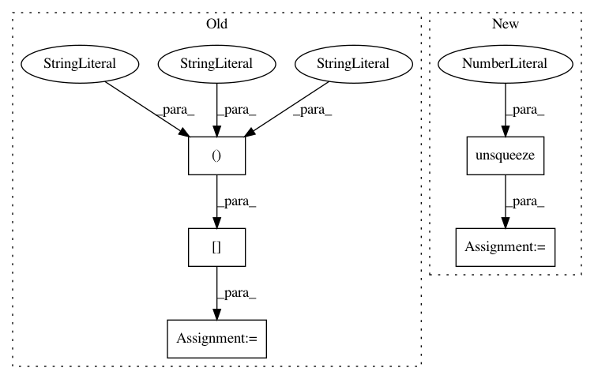

67addeaef37856340f2d220af9a7cad3c4256235,visdialch/decoders/disc.py,DiscriminativeDecoder,forward,#DiscriminativeDecoder#Any#Any#,22
Before Change
// score each option
scores = []
for opt_id in range(num_options):
opt = options[:, opt_id, :, :]
opt_len = options_len[:, opt_id]
opt_embed = self.option_rnn(opt, opt_len)
scores.append(torch.sum(opt_embed * enc_out, 1))
After Change
// repeat encoder output for every option
// shape: (batch_size, num_rounds, num_options, max_sequence_length)
encoder_output = encoder_output.unsqueeze(2).repeat(1, 1, num_options, 1)
// shape now same as `options`, can calculate dot product similarity
// shape: (batch_size * num_rounds * num_options, lstm_hidden_state)
encoder_output = encoder_output.view(
batch_size * num_rounds * num_options, self.config["lstm_hidden_size"]
)
// shape: (batch_size * num_rounds * num_options)
scores = torch.sum(options_embed * encoder_output, 1)
// shape: (batch_size, num_rounds, num_options)
scores = scores.view(batch_size, num_rounds, num_options)
return scores
In pattern: SUPERPATTERN
Frequency: 3
Non-data size: 5
Instances
Project Name: batra-mlp-lab/visdial-challenge-starter-pytorch
Commit Name: 67addeaef37856340f2d220af9a7cad3c4256235
Time: 2019-01-03
Author: karandesai281196@gmail.com
File Name: visdialch/decoders/disc.py
Class Name: DiscriminativeDecoder
Method Name: forward
Project Name: interactiveaudiolab/nussl
Commit Name: fa6f47e7aee228226421c52e61cce4e1ab4cc099
Time: 2020-03-15
Author: prem@u.northwestern.edu
File Name: tests/ml/test_loss.py
Class Name:
Method Name: test_permutation_invariant_loss_tf
Project Name: kevinzakka/recurrent-visual-attention
Commit Name: a43041b983084c012e6da8dee1a4d74d653f60d1
Time: 2017-11-23
Author: kevinarmandzakka@gmail.com
File Name: modules.py
Class Name: glimpse_sensor
Method Name: _extract_single_patch